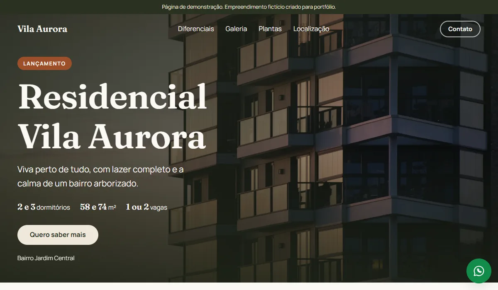
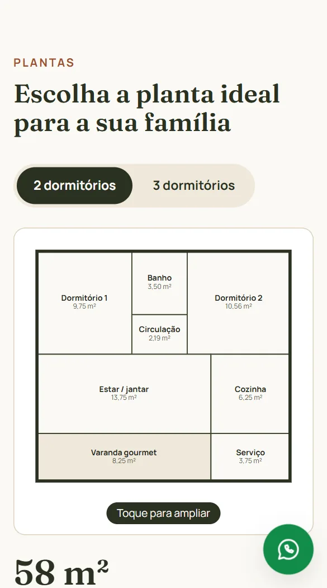
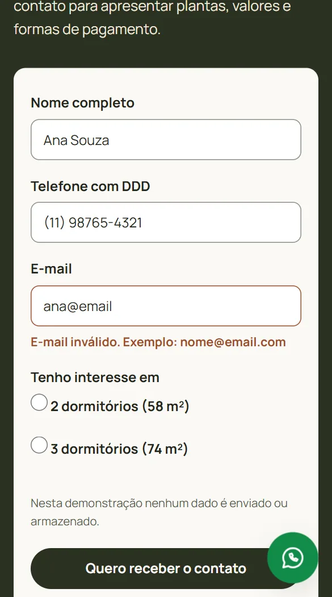
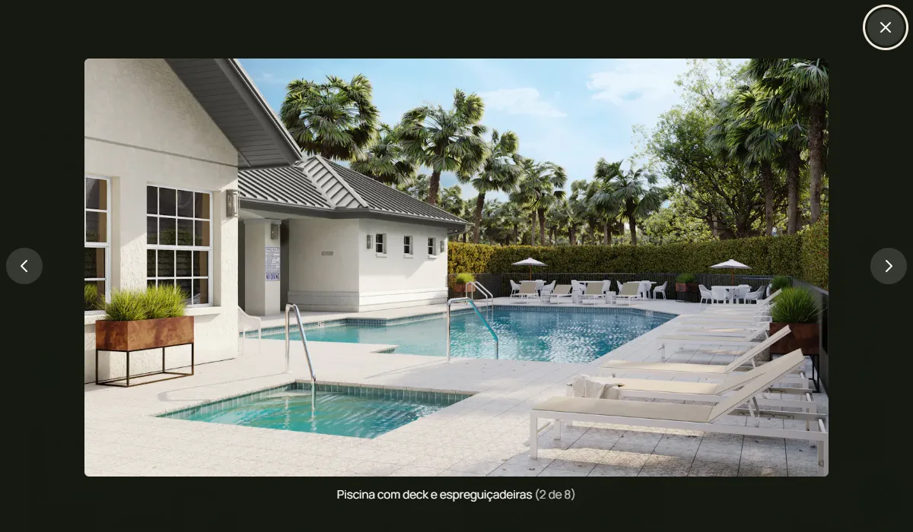
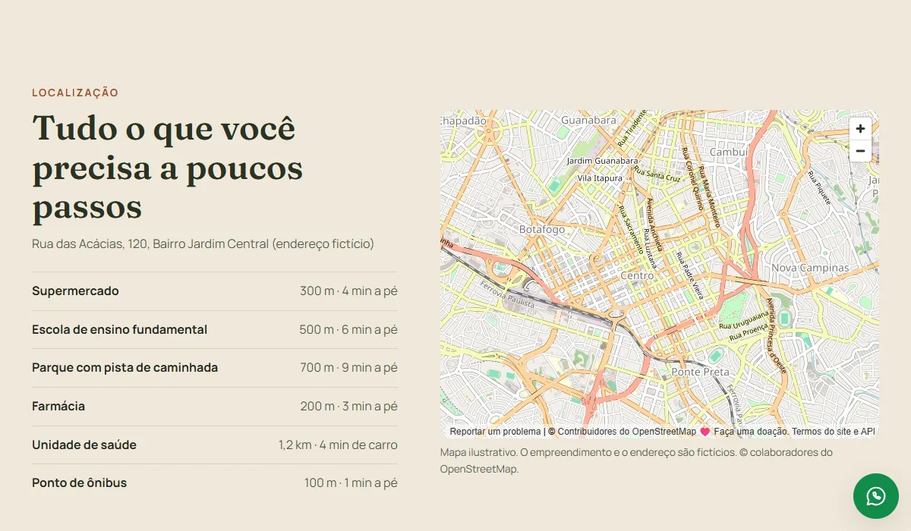

FOLHA Nº 01 — DETALHES DO PROJETO
Residencial Vila Aurora (demo)
Landing Page de Lançamento Imobiliário
Página de demonstração para o lançamento de um residencial fictício: foto em tela cheia, galeria com visualizador próprio, plantas desenhadas em SVG e formulário de contato com validação. Feita para mostrar, funcionando, o que uma construtora ou corretor recebe numa landing page sob medida.
FOLHA Nº 02 — O DESAFIO
Transformar visita em contato, pelo celular
A página de um lançamento imobiliário tem um único objetivo: fazer quem chega por um anúncio deixar nome e telefone para o corretor. Quase todo esse tráfego vem do celular, muitas vezes com internet fraca, e a página precisa carregar rápido mesmo cheia de fotos grandes, apresentar plantas legíveis numa tela pequena e não perder o contato por causa de um telefone digitado errado.
O desafio era entregar tudo isso sem framework e sem servidor, numa página que qualquer pessoa consiga abrir e testar, e deixar claro desde o primeiro segundo que o empreendimento, a construtora e o endereço são fictícios.
FOLHA Nº 03 — A SOLUÇÃO
Interface e Funcionalidades
Uma página única, pensada primeiro para o celular, que conduz o visitante do impacto da foto de fachada até o formulário: diferenciais, galeria, plantas, localização e contato. Um botão fixo de WhatsApp acompanha a rolagem. As fotos são ilustrativas, de banco gratuito.

Primeira Tela
Foto de fachada em tela cheia, selo "Lançamento", resumo do empreendimento (dormitórios, metragem e vagas) e o botão "Quero saber mais", que rola direto até o formulário. A foto principal é pré-carregada no tamanho certo para cada tela, para aparecer o mais cedo possível.
Mobile First
Layout desenhado primeiro para o celular, de 360 px até o desktop, em pé e deitado, com a faixa de aviso de demonstração sempre no topo.

Plantas em SVG
Plantas de 2 e 3 dormitórios desenhadas em SVG, com nome e metragem de cada cômodo (as áreas somam a área privativa). Abas navegáveis pelo teclado e toque para ampliar.

Formulário Validado
Máscara de telefone enquanto digita e mensagens de erro claras, mostradas só depois que a pessoa sai do campo, e anunciadas também para leitores de tela.
Envio Simulado
Na demonstração, nenhum dado sai do navegador. O código já traz, comentado, o caminho para ligar o formulário ao FormSubmit (contatos por e-mail) ou ao Firebase.

Galeria com Visualizador Próprio
Oito fotos com visualizador feito do zero, sem biblioteca: setas, teclado, deslizar o dedo no celular e Esc para fechar, com legenda e contador anunciados para leitores de tela.

Localização
Pontos próximos com distância e tempo a pé ou de carro, e um mapa do OpenStreetMap que só carrega quando o visitante chega perto da seção, sem pesar na abertura da página.
FOLHA Nº 04 — ARQUITETURA
Leve, acessível e pronta para virar real
A página é HTML, CSS e JavaScript puros, sem framework, sem etapa de build e sem nenhuma
dependência. O visualizador de fotos usa o elemento nativo <dialog> do
navegador, que já prende o foco e fecha com Esc. As regras do formulário ficam em funções separadas,
cobertas por 7 testes automatizados rodando no test runner que já vem no Node.
No Lighthouse para celular, medido no link publicado, a página tirou 97 em desempenho e 100 em acessibilidade, boas práticas e SEO. Para isso, as fotos estão em WebP de até 200 KB, as fontes carregam sem travar a página, as animações respeitam quem pediu menos movimento no sistema e o contraste de todas as cores foi calculado para passar no padrão WCAG AA. Para usar com um cliente real, basta trocar textos e fotos, ligar o formulário e o link do WhatsApp e remover os avisos de demonstração.
- HTML / CSS / JavaScript
- SVG
- Node Test Runner
- OpenStreetMap
- GitHub Pages